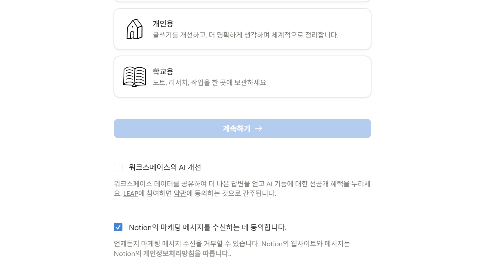
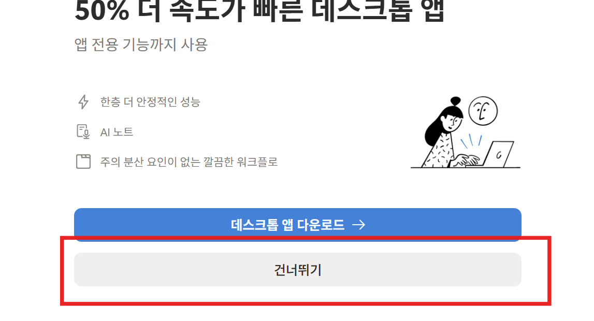
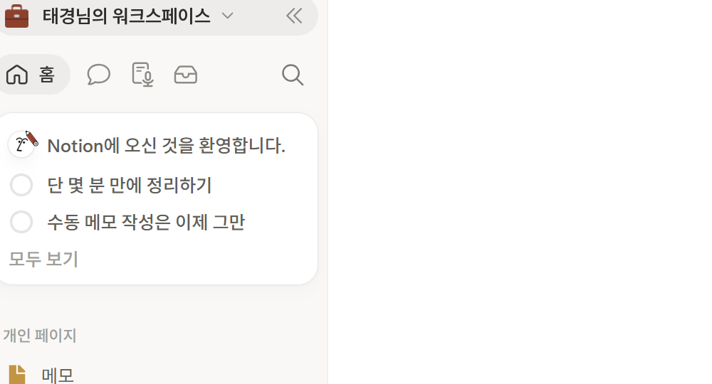
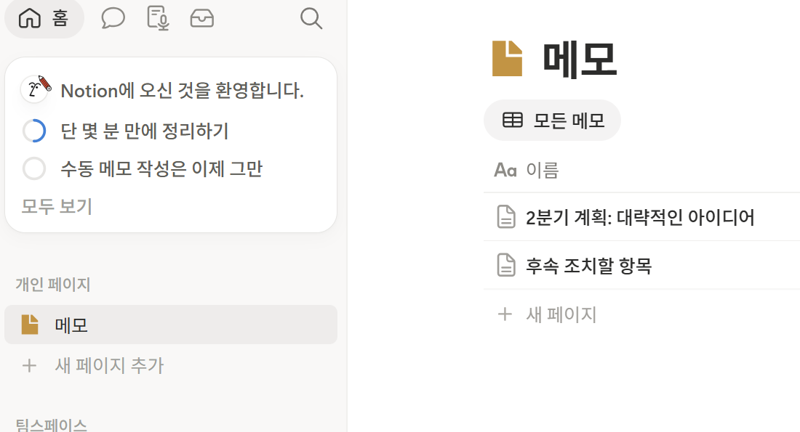
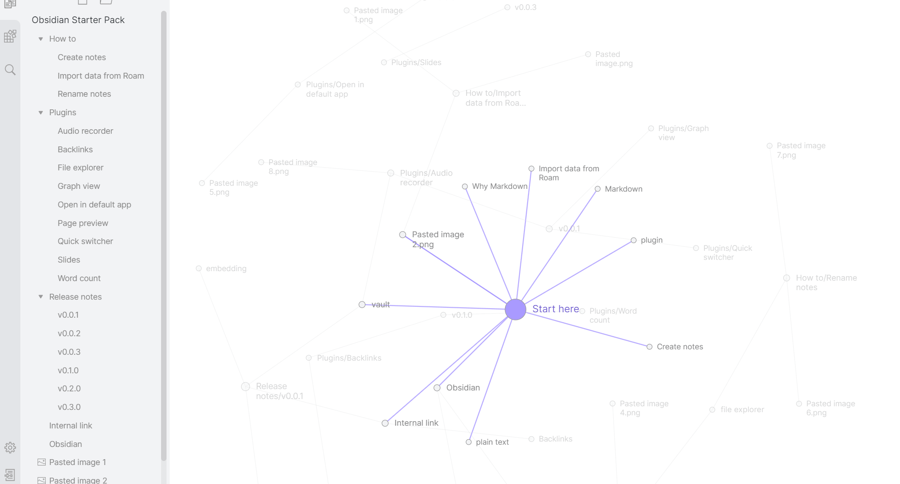
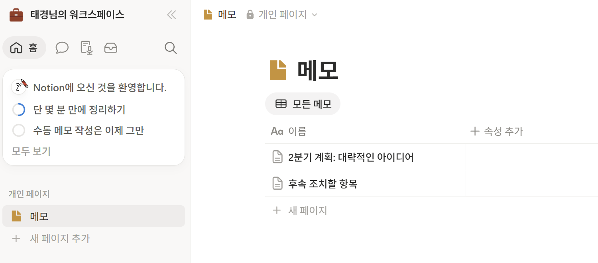
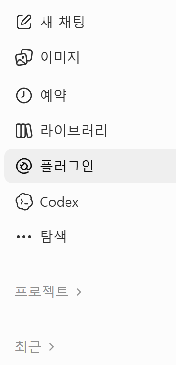
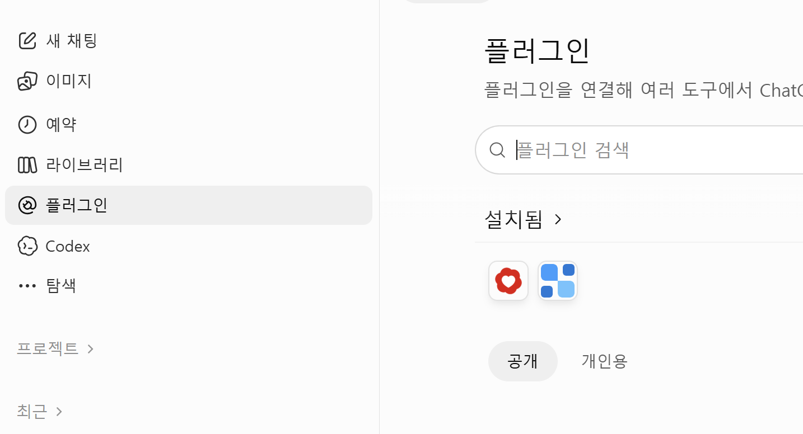
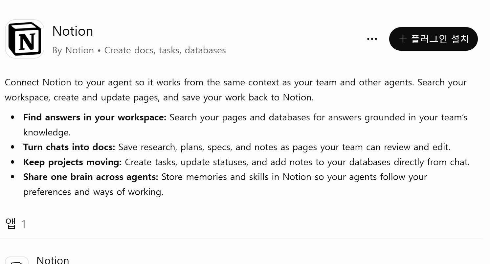
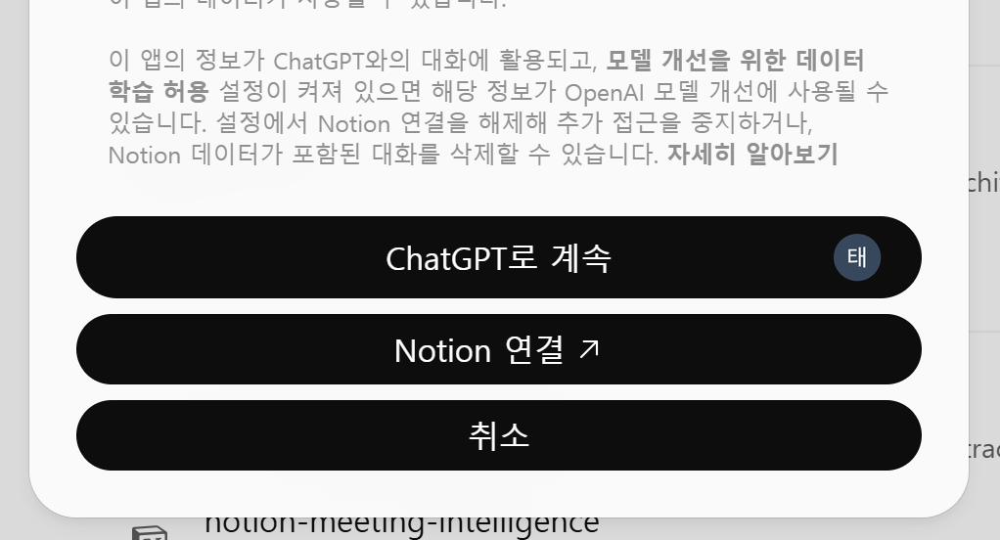

세컨드 브레인
노션 + ChatGPT로 만드는 나만의 기록 창고
오늘 쓸 ChatGPT와 노션 두 곳을 엽니다
사전 안내문의 계정으로 로그인합니다
주소창에 chatgpt.com과 notion.so를 차례로 입력합니다
- 크롬 주소창에 chatgpt.com을 입력합니다.
- 요청문을 보냅니다.
- 새 탭의 주소창에 notion.so를 입력합니다.
입장 연습입니다. 「경주 여행」을 계획한다는 말을 넣어서 한 줄로 인사해 주세요.
용도를 고르는 화면입니다

1 2 3① 「개인용」 → ② 마케팅 체크 끄기 → ③ 「계속하기」
데스크톱 앱을 권하는 화면입니다

빨간 상자 「건너뛰기」
노션 AI 시작 화면입니다

1① 왼쪽 위 「홈」
노션 첫 화면입니다

1 2① 「개인 페이지」 아래 「메모」 → ② 「새 페이지 추가」
ChatGPT에는 인사 한 줄이 돌아왔고 노션 첫 화면이 열려 있습니다
두 탭을 닫지 않고 둡니다
로그인 화면이 나오거나 답이 오지 않으면 고칩니다
로그인 화면이 나옵니다
요청을 보냈는데 답이 오지 않습니다
입장 연습을 다시 합니다. 「경주 여행」을 계획한다는 말을 넣어서 한 줄로 인사해 주세요.
오늘은 네 파트로 나만의 세컨드 브레인을 만듭니다
세컨드 브레인과 연결
노션 페이지와 ChatGPT 프로젝트를 만들어 둘을 잇습니다
파트 1에서 노션 페이지와 ChatGPT 프로젝트를 만들고 둘을 연결합니다
경주 여행 정보가 사진 · 메모 · 링크로 흩어져 있습니다
잠깐 영상 보고 갈게요 · 세컨드 브레인
세컨드 브레인은 기록을 머리 밖 한곳에 쌓아 두고 꺼내 쓰는 방식입니다
세컨드 브레인은 여행 수첩과 같습니다
적어 두었다가 필요할 때 펼쳐 봅니다
 옵시디언은 노트를 점과 선으로 보여 주는 앱입니다
옵시디언은 노트를 점과 선으로 보여 주는 앱입니다

123잠깐 영상 보고 갈게요 · 노트가 이어집니다
오늘은 ChatGPT가 노션 페이지에 직접 적습니다
옵시디언은 개인용도 업무용도 무료여서 집에서 따로 써 볼 수 있습니다
노션은 페이지를 한 장씩 만들어 적는 인터넷 노트입니다

123ChatGPT는 문장을 입력하면 글로 답을 보여 주는 채팅 화면입니다

12- 새 채팅 · 새 대화 창
- 프로젝트 · 한 주제의 지침과 파일과 대화
답은 채팅 화면 안에 쓰이고, 노션에는 아무것도 생기지 않습니다
에이전트는 목표를 받으면 도구를 호출하며 일을 끝내는 AI 프로그램입니다
에이전트는 공구함에서 도구를 순서대로 꺼내 쓰는 작업대와 같습니다
목표가 정해지면 필요한 도구를 순서대로 꺼내 씁니다
노션 페이지 하나와 ChatGPT 프로젝트 하나를 만듭니다
이름은 둘 다 「경주 여행」입니다
노션에서 새 페이지를 만들고 이름을 적습니다
- 노션 왼쪽 목록의 「새 페이지 추가」를 누릅니다
- 제목 칸에 「경주 여행」을 입력합니다
ChatGPT에서 프로젝트를 만들고 지침을 적습니다
- ChatGPT 탭에서 새 프로젝트를 만듭니다
- 프로젝트 이름 칸에 「경주 여행」을 입력합니다
- 지침 칸에 아래 지침 문장을 입력합니다
이 프로젝트는 서울에서 출발하는 경주 1박 2일 여행 계획에 쓰는 작업 공간이고, 짝이 되는 노션 페이지 이름은 「경주 여행」입니다. 답은 쉬운 말로 짧게 쓰고, 시간과 요금처럼 바뀔 수 있는 정보에는 「바뀔 수 있음」이라고 적습니다.
지침이 읽히는지 요청을 보내 봅니다
- 프로젝트 화면의 채팅창에 요청문을 보냅니다
- 돌아온 답을 읽습니다
이 프로젝트의 지침을 그대로 읽어 주세요. 노션 「경주 여행」 페이지와 짝이 되는 프로젝트인지도 알려 주세요.
노션에는 빈 「경주 여행」 페이지가, ChatGPT에는 지침이 있는 프로젝트가 생겼습니다
답이 지침과 맞지 않으면 고쳐 보냅니다
답이 지침에 적은 내용을 말하지 않습니다
지침 칸에 문장이 저장됐는지 보고 아래 요청문을 보냅니다
지침에 적힌 대로 다시 답해 주세요. 노션 「경주 여행」 페이지 이름을 지침에서 찾아 그대로 말해 주세요.
답이 길거나 어려운 말로 나옵니다
아래 요청문을 보냅니다
방금 답을 두 문장 이하로 줄여 주세요. 노션 「경주 여행」 이야기는 쉬운 말로만 써 주세요.
잠깐 영상 보고 갈게요 · ChatGPT와 노션이 연결됩니다
MCP는 AI 앱과 외부 앱을 잇는 공개 표준입니다
노션 서버는 검색 · 페이지 만들기 · 페이지 고치기 도구를 내줍니다
MCP는 어느 기기든 꽂히는 USB-C 포트와 같습니다
같은 모양이면 어떤 앱이든 꽂힙니다
노션에 쓰는 작업은 내가 승인해야 실행됩니다
카드의 내용을 읽고 「승인」을 누릅니다
ChatGPT에 노션을 연결하고 노션 페이지에 첫 세 줄을 씁니다
승인 화면을 두 번 만납니다. 연결할 때 한 번, 처음 쓸 때 한 번입니다
연결은 다섯 단계를 차례로 누르면 끝납니다
그다음 요청문을 보내고 승인합니다
ChatGPT의 플러그인 화면입니다

1 2① 왼쪽 「플러그인」 → ② 검색창에 Notion 입력
Notion을 누르면 나오는 화면입니다

1① 오른쪽 위 「+ 플러그인 설치」
ChatGPT와 Notion을 잇는 연결 창입니다

1① 「Notion 연결 ↗」(새 창이 열립니다)
Notion MCP에 연결하는 동의 화면입니다
① 워크스페이스 이름 → ② 「계속하기」
채팅창에 요청문을 보냅니다
- 프로젝트 「경주 여행」의 채팅창에 요청문을 보냅니다
내 노션 「경주 여행」 페이지 맨 위에 「여행 개요」 제목을 만들고, 그 아래에 세 줄을 적어 주세요. 세 줄은 날짜는 11월 8~9일, 인원은 2명, 교통은 KTX 경주역(구 신경주역)입니다. 다 적으면 어느 페이지에 적었는지 알려 주세요.
승인 카드가 뜨면 내용을 읽고 「승인」을 누릅니다
- 승인 카드가 뜨면 「승인」을 누릅니다
노션 「경주 여행」 맨 위에 「여행 개요」 세 줄이 적혀 있습니다
🧳 경주 여행
여행 개요
- 날짜 11월 8~9일
- 인원 2명
- 교통 KTX 경주역(구 신경주역)
▏
ChatGPT가 쓴 문장은 조금 다를 수 있습니다
세 줄이 적히지 않았거나 엉뚱한 곳에 적혔을 때 고칩니다
채팅에는 세 줄이 있는데 노션은 그대로입니다
요청문을 보내고 승인 카드가 뜨면 「승인」을 누릅니다
방금 말한 세 줄을 노션 「경주 여행」 페이지에 직접 적어 주세요. 적은 뒤 페이지 이름을 알려 주세요.
세 줄이 다른 페이지에 적혔습니다
요청문을 보냅니다
방금 세 줄을 적은 노션 페이지 이름을 알려 주세요. 그 페이지의 세 줄은 지우고, 같은 세 줄을 노션 「경주 여행」 페이지 맨 위에 적어 주세요.
승인 카드를 닫았거나 거절했습니다
요청문을 보냅니다
승인 카드를 닫았습니다. 노션 「경주 여행」 페이지 맨 위에 「여행 개요」 세 줄을 다시 적어 주세요.
파트 1이 끝나면 노션에 「경주 여행」이 있고 ChatGPT가 노션에 쓸 수 있습니다
다음 · 📥 파트 2 · 모으기
쉬는 시간입니다
돌아오면 파트 2에서 경주 명소를 조사합니다
모으기
ChatGPT가 경주 명소를 조사해 받은함에 모읍니다
파트 2에서 경주 명소 정보를 받은함에 모읍니다
조사한 정보는 정리하기 전에 먼저 한곳에 모아야 합니다
받은함은 아직 정리하지 않은 자료를 일단 쌓아 두는 노션 페이지입니다
받은함은 현관 옆 우편 바구니와 같습니다
열어 보기 전에 한곳에 둡니다
ChatGPT가 경주 명소 일곱 곳을 조사해 노션 「받은함」에 정리합니다
조사 결과는 ChatGPT가 노션에 직접 적습니다
프로젝트에서 새 채팅을 열고 조사 요청을 보냅니다
- 프로젝트 「경주 여행」에서 새 채팅을 엽니다.
- 다음 장의 요청문을 보냅니다.
- 승인 카드가 뜨면 「승인」을 누릅니다.
요청문 하나로 일곱 곳의 정리가 나옵니다
경주 1박 2일 여행에 쓸 명소 일곱 곳(대릉원 천마총, 첨성대, 동궁과 월지, 황리단길, 국립경주박물관, 불국사, 석굴암)을 조사해 주세요. 곳마다 소개 두 줄, 위치(시내권 또는 불국사권), 걷는 정도(적음, 보통, 많음 중 하나), 어울리는 시간대(오전, 낮, 저녁 중 하나), 알아둘 점 한 줄, 참고한 주소를 적어 주세요. 노션 「경주 여행」 페이지 아래에 「받은함」 페이지를 새로 만들고, 곳마다 제목 하나에 이 항목들을 붙여 저장해 주세요. 운영 시간과 요금은 바뀔 수 있으니 「바뀔 수 있음」이라고 함께 적어 주세요. 정보는 경주시 · 한국관광공사(VisitKorea) · 국립경주박물관 같은 공식 안내를 먼저 참고해 주세요.
내 메모 세 줄을 받은함 맨 아래에 더합니다
- 요청문을 보냅니다.
- 승인 카드가 뜨면 「승인」을 누릅니다.
노션 「받은함」 맨 아래에 「내 메모」 제목을 만들고, 아래 세 줄을 글자 그대로 추가해 주세요. 동궁과 월지는 저녁에 가고 싶다. 불국사는 오전에 가고 싶다. 황리단길에서 점심을 먹고 싶다.
「받은함」 맨 위에 첫 곳이 펼쳐져 있고 나머지 여섯 곳이 이어집니다
📥 받은함
경주 명소 일곱 곳
▾ 대릉원(천마총)
- 소개: 신라 고분 공원입니다. 천마총 안에 들어가 볼 수 있습니다.
- 위치: 시내권
- 걷는 정도: 보통
- 어울리는 시간대: 낮
- 알아둘 점: 대릉원 정문에서 걸어서 첨성대에 갈 수 있습니다.
- 참고한 주소: (ChatGPT가 적은 공식 안내 주소 한 줄)
곳마다 같은 여섯 항목이 있습니다
불국사 항목에 운영 시간과 「바뀔 수 있음」이 적히고 맨 아래에 「내 메모」가 있습니다
▾ 불국사
- 소개: 1995년 유네스코 세계유산으로 등재된 사찰입니다.
- 위치: 불국사권
- 걷는 정도: 보통
- 어울리는 시간대: 오전
- 알아둘 점: 운영 시간 09:00~18:00 (바뀔 수 있음). 석굴암과 함께 세계유산입니다.
- 참고한 주소: (ChatGPT가 적은 공식 안내 주소 한 줄)
내 메모
- 동궁과 월지는 저녁에 가고 싶다.
- 불국사는 오전에 가고 싶다.
- 황리단길에서 점심을 먹고 싶다.
메모 세 줄은 말한 그대로 들어 있습니다
항목이 빠졌거나 받은함이 둘일 때 고칩니다
항목이 빠진 곳이 있습니다
요청문을 보냅니다
노션 「받은함」에서 항목이 빠진 명소를 찾아 알려 주세요. 빠진 항목을 채워 같은 자리에서 고쳐 주세요.
받은함 페이지가 둘입니다
요청문을 보냅니다
노션에 「받은함」 페이지가 둘이면 어느 것이 「경주 여행」 아래에 있는지 알려 주세요. 다른 하나는 지우고, 앞으로는 그 「받은함」에만 써 주세요.
참고한 주소가 비었거나 이상합니다
요청문을 보냅니다
노션 「받은함」에서 참고한 주소가 비어 있는 곳을 찾아 알려 주세요. 주소를 찾지 못하면 「주소를 찾지 못함」이라고 적어 주세요.
새 채팅을 열 때마다 같은 사정을 다시 적어야 합니다
프로젝트의 지침은 모든 대화가 먼저 읽는 안내문이고 파일은 올려 둔 자료입니다
프로젝트 설정은 책상 위의 메모지와 서류철과 같습니다
메모지는 매번 먼저 읽고, 서류철은 필요할 때 꺼냅니다
지침에 받은함 주소를 적어 저장 자리를 한 번만 정합니다 (선택)
선택 건너뛰어도 됩니다
받은함 주소를 가져옵니다 (선택)
- 노션 「받은함」 페이지의 주소창을 누릅니다.
- Ctrl과 C를 함께 누릅니다.
- ChatGPT 탭에서 프로젝트 「경주 여행」의 지침 칸을 엽니다.
지침에 저장 규칙과 주소를 적습니다 (선택)
- 지침 칸 맨 아래에 아래 지침 문장을 입력합니다.
- 문장 끝에서 Ctrl과 V를 함께 눌러 주소를 넣습니다.
- 지침을 저장합니다.
정리한 내용은 항상 노션 「받은함」 페이지 맨 아래에 추가합니다. 이미 있는 내용은 지우지 않습니다. 저장한 뒤에는 저장한 페이지 이름을 알려 줍니다. 받은함 주소는 다음과 같습니다.
저장 위치를 말하지 않고 요청합니다 (선택)
- 요청문을 보냅니다.
- 승인 카드가 뜨면 「승인」을 누릅니다.
황리단길에서 걸을 때 알아둘 점을 두 줄로 정리해 주세요. 저장은 지침대로 하고, 저장한 페이지 이름이 노션 「받은함」과 같은지 알려 주세요.
「받은함」 맨 아래에 황리단길 정리가 더해지고 앞의 내용은 그대로입니다 (선택)
📥 받은함
▸ 경주 명소 일곱 곳
▸ 내 메모
황리단길에서 알아둘 점 새로 추가
- 황남동 한옥 카페와 공방이 이어지는 거리입니다.
- 보행로가 좁아 천천히 걷습니다.
요청에는 저장 위치가 없었습니다
엉뚱한 곳에 저장되거나 앞의 내용이 지워졌을 때 고칩니다 (선택)
받은함 밖의 다른 페이지에 저장됐습니다
지침 끝에 주소가 있는지 보고 요청문을 보냅니다
지침에 적힌 노션 「받은함」 주소를 읽어 주세요. 방금 정리한 두 줄을 그 페이지 맨 아래에 다시 저장해 주세요.
앞의 정리가 지워졌습니다
요청문을 보냅니다
노션 「받은함」에서 앞의 명소 정리가 지워졌다면 이 대화의 내용을 보고 다시 적어 주세요. 앞으로는 맨 아래에 추가만 해 주세요.
저장 자리를 되묻습니다
지침이 저장됐는지 보고 요청문을 보냅니다
저장 자리를 묻지 말고 노션 「받은함」 페이지 맨 아래에 추가해 주세요. 주소는 지침에 있습니다.
파트 2가 끝나면 「경주 여행」 아래에 「받은함」이 쌓여 있습니다
다음 🗂 파트 3 · 정리하기
쉬는 시간입니다
돌아오면 파트 3에서 받은함을 표로 정리합니다
정리하기
받은함의 명소 일곱 곳을 표 하나로 모읍니다
이번 파트에서는 일곱 곳을 표 하나로 정리합니다
받은함에 쌓인 글에서 걷기 편한 곳만 고르기는 어렵습니다
걷는 정도가 적은 곳은 어디일까요
데이터베이스는 정리된 자료를 저장하고 관리하고 지키는 저장소입니다
노션 데이터베이스는 페이지를 모은 표입니다
같은 표를 보기, 필터, 정렬로 달리 볼 수 있습니다
칸이 정해진 카드를 모아 둔 상자와 같습니다
카드 한 장이 행 하나입니다
실습 5 · 일곱 칸짜리 빈 표 「경주 자료함」을 만듭니다
새 채팅에서 요청문 하나를 보냅니다
- 프로젝트 「경주 여행」에서 새 채팅을 엽니다
- 요청문을 보냅니다
노션 「경주 여행」 페이지 아래에 「경주 자료함」 데이터베이스를 만들어 주세요. 열은 이름, 종류, 위치, 걷는 정도, 추천 시간대, 출처 링크, 확인일 일곱 개로 해 주세요. 종류는 유적, 사찰, 박물관, 거리 중에서 고르는 칸, 위치는 시내권, 불국사권 중에서 고르는 칸, 걷는 정도는 적음, 보통, 많음 중에서 고르는 칸, 추천 시간대는 오전, 낮, 저녁 중에서 고르는 칸으로 해 주세요. 출처 링크는 주소 칸, 확인일은 날짜 칸으로 하고, 보기는 표로 해 주세요.
승인 카드가 뜨면 내용을 읽고 「승인」을 누릅니다
- 승인 카드가 뜨면 내용을 읽고 「승인」을 누릅니다
노션에서 「경주 여행」 안의 「경주 자료함」을 엽니다
- 노션 「경주 여행」 페이지를 엽니다
- 페이지 안의 「경주 자료함」을 엽니다
머리 칸 일곱 개가 달린 빈 표가 생깁니다
고르는 칸을 누르면 정해 둔 이름이 나옵니다
걷는 정도와 추천 시간대도 같은 방식으로 고릅니다
표가 다르게 만들어졌다면 요청문으로 고쳐 보냅니다
열이 일곱 개가 아니거나 이름이 다릅니다
노션 「경주 자료함」의 열을 이름, 종류, 위치, 걷는 정도, 추천 시간대, 출처 링크, 확인일 일곱 개로 맞춰 주세요. 이름이 다른 열은 이름만 바꾸고, 나머지는 그대로 두세요.
고르는 칸이 글자 칸이거나 고를 이름이 없습니다
노션 「경주 자료함」의 종류, 위치, 걷는 정도, 추천 시간대 열을 고르는 칸으로 바꾸고, 고를 이름을 유적 사찰 박물관 거리, 시내권 불국사권, 적음 보통 많음, 오전 낮 저녁으로 각각 넣어 주세요.
표 모양이 없고 글 목록으로 만들어졌습니다
노션 「경주 여행」 아래에 「경주 자료함」을 표 모양의 데이터베이스로 다시 만들어 주세요. 열과 고를 이름은 앞서 말한 대로 해 주세요.
일곱 곳을 종류별로 모아 보고 싶습니다
사찰만 모아 보려면 어떻게 할까요
태그는 자료의 종류를 알려 주는 이름표입니다
서랍 안 칸막이에 붙인 이름표와 같습니다
같은 이름표끼리 한 칸에 모입니다
「경주 여행」 페이지에서 불국사 자료로 바로 가고 싶습니다
페이지에서 페이지로 어떻게 건너갈까요
@멘션은 글 속에서 다른 페이지로 가는 링크를 거는 기능입니다
책 사이에 끼워 둔 쪽지와 같습니다
쪽지를 따라가면 관련된 책이 나옵니다
실습 6 · 받은함의 일곱 곳을 표의 행으로 채우고 서로 잇습니다
받은함의 일곱 곳을 행으로 옮기는 요청문을 보냅니다
- 프로젝트 「경주 여행」에서 새 채팅을 엽니다
- 요청문을 보냅니다
- 승인 카드가 뜨면 내용을 읽고 「승인」을 누릅니다
노션 「받은함」에 적힌 경주 명소 일곱 곳, 곧 불국사, 석굴암, 대릉원, 첨성대, 동궁과 월지, 황리단길, 국립경주박물관을 노션 「경주 자료함」에 한 곳씩 행으로 추가해 주세요. 종류, 위치, 걷는 정도, 추천 시간대는 고르는 칸의 이름 중에서 골라 채우고, 출처 링크에는 받은함에 적힌 주소를 넣어 주세요. 확인일에는 오늘 날짜를 넣어 주세요. 각 행의 본문에는 받은함에 있는 설명을 세 줄로 정리해 주세요.
막히면 · 짧은 문장으로 보냅니다
노션 「받은함」의 경주 명소 일곱 곳을 「경주 자료함」에 한 곳씩 행으로 써 주세요
「가볼 곳」 줄에 일곱 곳의 링크를 거는 요청문을 보냅니다
- 노션 「경주 자료함」을 엽니다
- 요청문을 보냅니다
- 승인 카드가 뜨면 내용을 읽고 「승인」을 누릅니다
- 노션 「경주 여행」 페이지를 엽니다
노션 「경주 여행」 페이지 맨 아래에 「가볼 곳」 줄을 만들고, 노션 「경주 자료함」의 일곱 행 이름을 @멘션으로 한 줄에 하나씩 이어 주세요. 이름은 행의 이름 그대로 쓰세요. 각 행 페이지의 본문 맨 아래에는 「경주 여행」으로 돌아가는 @멘션도 하나씩 넣어 주세요.
일곱 곳이 행 일곱 개로 채워진 표가 됩니다
| Aa이름 | ◉종류 | ◉위치 | ◉걷는 정도 | ◉추천 시간대 | 🔗출처 링크 | 📅확인일 |
|---|---|---|---|---|---|---|
| 불국사 | 사찰 | 불국사권 | 보통 | 오전 | 🔗 VisitKorea | 10/22 |
| 석굴암 | 사찰 | 불국사권 | 보통 | 오전 | 🔗 VisitKorea | 10/22 |
| 대릉원 | 유적 | 시내권 | 보통 | 낮 | 🔗 VisitKorea | 10/22 |
| 첨성대 | 유적 | 시내권 | 적음 | 낮 | 🔗 VisitKorea | 10/22 |
| 동궁과 월지 | 유적 | 시내권 | 적음 | 저녁 | 🔗 VisitKorea | 10/22 |
| 황리단길 | 거리 | 시내권 | 많음 | 낮 | 🔗 VisitKorea | 10/22 |
| 국립경주박물관 | 박물관 | 시내권 | 적음 | 오전 | 🔗 국립경주박물관 | 10/22 |
행 하나를 열면 속성 여섯 개와 설명 세 줄이 보입니다
불국사
- 1995년 유네스코 세계유산으로 등재되었습니다.
- 관람 시간은 09:00~18:00입니다. 바뀔 수 있습니다.
- 석굴암과 함께 불국사권에 있습니다.
「경주 여행」 맨 아래 「가볼 곳」에 일곱 곳의 링크가 걸립니다
경주 여행
가볼 곳
같은 일곱 곳을 갤러리 보기로 바꿔 볼 수 있습니다
칸이 비거나 겹치거나 링크가 걸리지 않으면 고쳐 보냅니다
종류나 위치 같은 칸이 비었거나 다른 이름이 들어갔습니다
노션 「경주 자료함」 일곱 행의 종류, 위치, 걷는 정도, 추천 시간대가 비어 있으면 고르는 칸의 이름 중에서 맞는 것으로 채워 주세요. 이미 채운 칸은 그대로 두세요.
같은 이름의 행이 둘 이상입니다
노션 「경주 자료함」에 같은 이름의 행이 둘 이상이면 하나만 남기고 나머지는 지워 주세요. 지운 행의 이름을 알려 주세요.
가볼 곳 줄이 글자뿐이고 눌러도 열리지 않습니다
노션 「경주 여행」 페이지의 「가볼 곳」 줄을 다시 써 주세요. 각 이름을 @멘션으로 걸어 노션 「경주 자료함」의 행 페이지로 이어 주세요.
「경주 여행」 아래에 표 하나와 링크 일곱 개가 생겼습니다
다음 파트는 꺼내 쓰기입니다
쉬는 시간입니다. 돌아오면 자료함으로 일정표를 만듭니다
탭을 닫지 않습니다
꺼내 쓰기
자료함을 찾아 읽고 1박 2일 일정표를 씁니다
이번 파트에서는 자료함을 찾아 일정표를 씁니다
실습 7 · 자료함으로 1박 2일 일정표 만들기
실습 8 · 내 여행지 한 곳을 주간 정리로 자료함에 넣기 (선택)
일곱 곳 중에서 걷는 정도가 적은 곳만 보고 싶습니다
조건에 맞는 줄만 어떻게 남길까요
검색은 낱말로 찾고 필터는 조건에 맞는 행만 남깁니다
도서관에서 제목으로 찾는 일과 분류표로 책장을 추리는 일과 같습니다
제목으로 찾는 것이 검색이고 분류표로 추리는 것이 필터입니다
일정표를 부탁하면 ChatGPT는 내 노션 자료를 가져와 씁니다
RAG는 답을 쓰기 전에 바깥 문서를 찾아 덧붙이는 방식입니다
먼저 큰 문서를 조각으로 나누고 숫자 묶음으로 바꿔 저장합니다
미리 해 두는 일입니다
질문이 오면 가까운 조각을 찾아 질문 옆에 붙이고 답을 씁니다
질문할 때마다 일어나는 일입니다
한 번에 읽는 글의 양이 정해져 있어서 필요한 조각만 넣습니다
모델이 한 번에 받는 글의 양은 정해져 있습니다
시험 때 펼쳐 보는 정리 노트와 같습니다
필요한 쪽만 펼쳐 놓고 답을 씁니다
영상으로 나누기, 찾기, 붙이기, 만들기를 한 번에 봅니다
나누기 · 찾기 · 붙이기 · 만들기
ChatGPT의 노션 검색도 찾기, 붙이기, 만들기로 이어집니다
두 방식 모두 찾은 글을 질문 옆에 붙여 답을 씁니다
다른 점은 미리 만든 색인에서 찾는지, 질문에 따라 여러 번 찾을 수 있는지입니다
아래 줄 방식을 에이전트형 검색이라 부릅니다
자료가 낡았거나 찾기가 빗나가면 답도 빗나갑니다
자료함의 확인일 열은 그 줄이 언제 적힌 것인지 알려 줍니다
요청은 그대로 둘 것, 바꿀 것, 알려 줄 것으로 나눠 씁니다
이사 업체에 남기는 쪽지와 같습니다
이건 그대로 두고, 이건 옮기고, 끝나면 알려 달라고 적습니다
실습 7 · 자료함을 찾아 읽고 「1박 2일 일정표」 페이지를 씁니다
먼저 자료함에서 걷는 정도가 적은 곳을 찾는 요청문을 보냅니다
- 프로젝트 「경주 여행」에서 새 채팅을 엽니다
- 요청문을 보냅니다
노션 「경주 자료함」에서 걷는 정도가 적음인 곳을 모두 찾아 이름과 추천 시간대를 알려 주세요. 아직 아무것도 고치거나 쓰지는 마세요.
승인하면 걷는 정도가 적은 세 곳이 답으로 나옵니다
- 승인 카드가 뜨면 내용을 읽고 「승인」을 누릅니다찾기에서는 뜨지 않을 수도 있습니다
자료함을 읽고 일정표 페이지를 쓰는 요청문을 보냅니다
- 요청문을 보냅니다
- 승인 카드가 뜨면 내용을 읽고 「승인」을 누릅니다
막히면 · 짧은 문장으로 보냅니다
노션 「경주 자료함」의 일곱 곳으로 「경주 여행」 아래에 「1박 2일 일정표」 새 페이지를 써 주세요
노션 「경주 자료함」의 일곱 곳을 모두 읽어 주세요. 자료함은 고치지 말고 읽기만 해 주세요. 「경주 여행」 아래에 「1박 2일 일정표」 새 페이지를 만들고, 첫째 날은 오전, 오후, 저녁으로, 둘째 날은 오전, 오후로 나누어 주세요. 자료함의 추천 시간대와 위치에 맞춰 같은 위치의 곳을 묶고, 곳마다 이름은 @멘션으로 걸고 걷는 정도와 한 줄 설명을 붙여 주세요. 맨 아래에 서울에서 경주까지 가는 이동과 준비물 체크리스트를 넣고, 끝나면 읽은 곳의 이름을 알려 주세요.
채팅에 나온 읽은 곳 목록을 읽습니다
- 채팅에 나온 읽은 곳 목록을 읽습니다
첫째 날 오전은 불국사권, 오후는 시내권으로 나뉩니다
🌅 첫째 날 · 오전 (불국사권)
- 📄 불국사 걷기 보통 1995년 유네스코 세계유산
- 📄 석굴암 걷기 보통 불국사와 함께 세계유산
☀️ 첫째 날 · 오후 (시내권)
- 📄 대릉원 걷기 보통 신라 고분 공원, 천마총 내부 공개
- 📄 첨성대 걷기 적음 632년경 세운 신라 천문대, 대릉원 정문에서 가까움
첫째 날 저녁과 둘째 날도 추천 시간대에 맞춰 놓입니다
🌙 첫째 날 · 저녁 (시내권)
- 📄 동궁과 월지 걷기 적음 신라 동궁 터와 연못, 야경
🌅 둘째 날 · 오전 (시내권)
- 📄 국립경주박물관 걷기 적음 신라 유물, 10:00~18:00
☀️ 둘째 날 · 오후 (시내권)
- 📄 황리단길 걷기 많음 황남동 한옥 카페·공방 거리, 보행로 좁음
맨 아래에 이동 순서와 준비물 체크리스트가 붙습니다
🚆 이동
- 서울 → 경주: KTX로 가서 경주역(구 신경주역)에서 내립니다.
- 첫째 날 오전은 불국사권, 오후부터는 시내권이라 이동은 한 번입니다.
- 시간과 요금은 바뀔 수 있습니다.
🎒 준비물
- 편한 걷기 신발
- KTX 예매 내역
- 보조 배터리
- 물
- 얇은 겉옷
자료함에 없는 곳이 들어가거나 시간대가 어긋나면 고쳐 보냅니다
자료함에 없는 곳이 일정표에 들어갔습니다
노션 「1박 2일 일정표」에서 노션 「경주 자료함」에 없는 곳을 찾아 알려 주세요. 그 곳은 자료함에 있는 곳으로 바꿔 주세요.
시간대가 자료함의 추천 시간대와 다릅니다
노션 「1박 2일 일정표」의 시간대를 노션 「경주 자료함」의 추천 시간대에 맞춰 다시 나눠 주세요. 다른 줄은 그대로 두세요.
새 페이지가 「경주 여행」 밖에 생겼습니다
노션 「1박 2일 일정표」를 「경주 여행」 페이지 아래로 옮겨 주세요. 옮긴 뒤 어느 페이지 아래에 있는지 알려 주세요.
받은함에는 새 자료가 계속 쌓입니다
쌓인 것을 언제 자료함으로 옮길까요
주간 루틴은 일주일에 한 번 같은 정리 요청을 보내는 습관입니다
주말 서랍 정리와 같습니다
새로 들어온 것만 제자리에 넣습니다
실습 8 · 내 여행지로 바꾸기
건너뛰어도 됩니다
시작 전에 가고 싶은 곳 한 곳을 정합니다
내가 가고 싶은 곳을 받은함에 쌓는 요청문을 보냅니다
- 요청문을 보냅니다
- 승인 카드가 뜨면 내용을 읽고 「승인」을 누릅니다
노션 「받은함」 맨 아래에 제가 가고 싶은 곳 한 곳을 조사해 추가해 주세요. 곳 이름은 [내가 가고 싶은 곳의 이름]입니다. 이름, 종류, 위치, 걷는 정도, 가기 좋은 시간대를 한 줄씩 적고, 출처 주소도 적어 주세요. 끝나면 추가한 곳의 이름을 알려 주세요.프로젝트 지침에 주간 정리 문장을 적습니다
- 프로젝트 지침 맨 아래에 주간 정리 문장을 입력합니다
- 지침을 저장합니다
제가 주간 정리라고 말하면 노션 「받은함」에서 아직 노션 「경주 자료함」에 없는 곳을 찾아 행으로 추가합니다. 종류, 위치, 걷는 정도, 추천 시간대는 고르는 칸의 이름 중에서 맞는 것을 고르고, 맞는 이름이 없으면 비워 둡니다. 확인일에는 오늘 날짜를 넣고, 끝나면 추가한 행 수를 알려 줍니다.
「주간 정리입니다」 한 줄을 보냅니다
- 요청문을 보냅니다
- 승인 카드가 뜨면 내용을 읽고 「승인」을 누릅니다
주간 정리입니다. 노션 「받은함」에서 아직 노션 「경주 자료함」에 없는 곳을 찾아 행으로 추가해 주세요.
자료함의 행이 일곱 개에서 여덟 개로 늘어납니다
새 곳이 들어오지 않거나 행이 겹치면 고쳐 보냅니다
받은함의 새 곳이 자료함에 들어오지 않았습니다
노션 「받은함」과 노션 「경주 자료함」을 비교해서, 자료함에 없는 곳을 행으로 추가해 주세요. 이미 있는 행은 그대로 두세요.
같은 이름의 행이 둘입니다
노션 「경주 자료함」에서 같은 이름의 행이 둘이면 이름을 알려 주세요. 앞으로 주간 정리에서는 이미 있는 이름을 넘어가 주세요.
새 행의 칸이 비었습니다
노션 「경주 자료함」에서 이번에 추가한 행의 빈 칸을 고르는 칸의 이름 중에서 맞는 것으로 채워 주세요.
강사 화면에서 폴더의 문서 서른 개를 요청 한 줄로 노션에 보냅니다
이 폴더의 문서 서른 개를 읽고 노션 「경주 자료함」에 한 줄씩 행으로 추가해 주세요. 이름은 파일 이름으로 하고, 종류와 걷는 정도와 추천 시간대는 내용에 맞는 이름으로 채워 주세요.
오늘 쓴 노션 플러그인을 다른 앱에서도 같은 방식으로 씁니다
노션 「경주 자료함」에 행 서른 개가 들어옵니다
「경주 여행」 아래에 「1박 2일 일정표」가 놓였습니다
이제 마무리입니다
「경주 여행」 아래에 받은함, 경주 자료함, 1박 2일 일정표가 생겼습니다
모두 ChatGPT가 노션에 직접 적은 것입니다